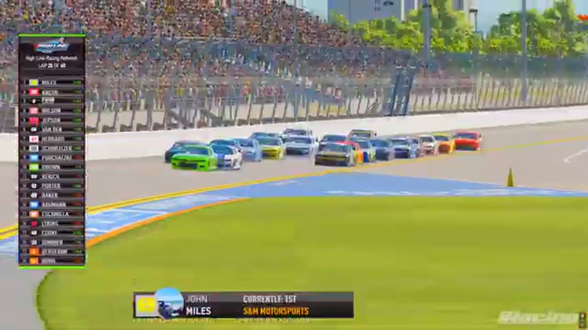

Jaden Porter
Team assignment not stated in the structured owner record.
1 RECOVERED WIN / EVERY ONE RECEIPTED
- Official files
- 4
- Central editions
- 3
- Exact tape cues
- 9
- Accepted podiums
- 1
Jaden Porter's accepted HLRN result file contains 1 supported feature win and 1 recovered podium: S1 R1 at Daytona (P1). A consistently stated team affiliation remains open for owner review. The currently indexed source window runs from November 17, 2025 through February 17, 2026.
The searchable official-broadcast footprint covers 4 race files, with the heaviest repeated track signal at Daytona. 3 Highline Central editions and 9 primary-race jump points connect the result ledger back to the tape. The densest direct-tape categories are postrace (2 cues) and battle (2 cues). Those counts describe where the name is easiest to find; they are not fault, pace, or performance grades. A source-attributed car frame is published with its original video and timestamp. That is the current discovery map for Jaden Porter.
No unsupported start total, full points total, car number, or finishing position is added around those receipts. The dossier grows from accepted results and source appearances, not from broadcast-name volume. Separately, 1 Highline Live file sits on the bonus shelf and never enters the official season ledger. The displayed name is labeled transcript normalized; that status remains visible so an owner roster can strengthen or correct the identity without rewriting the evidence trail. Those boundaries define Jaden Porter's public HLRN file.
9 featured race-tape cues
These are discovery routes into complete HLRN broadcasts, not performance grades or inferred results.
- S1 / R1 · RESULT
Jaden Porter is confirmed atop the Daytona results
The primary broadcast cannot show the live finish because of connection trouble, but the booth confirms Jaden Porter as the winner and reads Francisco Bacayo second and Justin Lee Pearson third from the displayed results.
Daytona - S1 / R12 · FINISH
Matt Brown takes Daytona after the leaders crash on the final lap
The white flag falls with Jaden Porter leading, but the front group crashes on the final lap. Matt Brown clears the wreck, takes the lead, and receives the live winner call at 1:36:26.
Daytona - S1 / R12 · BATTLE
The Daytona lead pack goes three wide
S1 / R12 at 59:42: The Daytona pack compresses three wide while Jaden Porter and Matt Brown are named on the call. The chapter keeps the live battle intact and makes no finishing-order claim.
Daytona - S1 / R12 · BATTLE
Jaden Porter anchors a four-car Darkhorse train at Daytona
HLRN identifies Jaden Porter as a Darkhorse driver and returns to a four-car team line with seven laps remaining in the stage. The window is pack-position context, not the caution replay the automated classifier had suggested.
Daytona - S1 / R1 · RESTART
Jaden Porter and Francisco Bacayo bring Daytona back to green
S1 / R1 at 1:12:12: Jaden Porter, Francisco Bacayo, and Zack Cato are in the booth's front-pack call as Daytona returns to green. The cut keeps the restart launch and the first lap of lane development together.
Daytona - S1 / R12 · INCIDENT
Jerry Fassett spins across the No. 28 in Daytona's late wreck
HLRN reviews Jerry Fassett moving down and spinning across the nose of the No. 28 as several cars are caught in the sequence. The card keeps the visible replay and avoids turning the booth's angle review into a fault ruling.
Daytona - S1 / R1 · INCIDENT
A new Daytona wreck interrupts Jaden Porter's inside-line run
Jaden Porter is pinned to the inside behind John Miles and Ted Rakeese when another wreck erupts. HLRN receives damage signals but does not immediately identify the cause, so the card preserves Porter's race position without blaming him.
Daytona - S1 / R13 · POSTRACE
Jaden Porter anchors the Dover finish replay
S1 / R13 at 2:00:48: The reviewed live-race close has passed before this Dover finish booth review begins with Jaden Porter and Matt Brown named in the discussion. It remains post-race context, not a new incident, stage, strategy call, finish, or result receipt.
Dover - S1 / R1 · POSTRACE
Jaden Porter and Francisco Bacayo anchor the Daytona post-race result review
S1 / R1 at 1:47:55: The reviewed live-race close has passed before this Daytona result booth review begins with Jaden Porter, Francisco Bacayo, Justin Lee Pearson, and Nick Bowman named in the discussion. It remains post-race context, not a new incident, stage, strategy call, finish, or result receipt.
Daytona
Recent editions connected to Jaden Porter
Brown Survives Daytona
A final-lap wreck removed the front group and opened the lane for Matt Brown, Ryan Wilson, and Ricky Miles.
S1 / R2Moreno Takes Over Homestead
Juan Escamilla and Bryce Hinton split the stages before Ethan Moreno turned his Highline debut into a feature win.
S1 / R1Porter Opens the Highline Era
Bryce Hinton banked the first stage, but Jaden Porter delivered Darkhorse the inaugural feature win at Daytona.
Verified team history is not consistently stated. Complete starts, finishes, and points remain open beyond the recovered results. Name normalization remains reviewable against owner records.